HexOct cells in crochet: a complete pattern for two crocheted solids, Narcissus and the cube, that stack face to face into a crystal
You will crochet two kinds of closed, solid cells, each made of flat faces sewn together over a stiff folded core:
Every square is the same size: 9.5 cm a side. The cells fit together whole face to whole face. Two Narcissus placed hexagon to hexagon make a 12-faced solid called the twisted cube. Two cubes side by side make a brick. Layers of twisted cubes (called h layers) and layers of bricks (c layers) stack on each other, and every layer meets the next on whole squares, whatever the order of the layers. This is the HexOct crystal built in three dimensions.
The faces are worked flat in rows of single crochet. The row counts were computed from the gauge so that every side comes out at its true length within 1 % (the check is in §A5). The cores are what keep the faces flat and the corners at the right angles, so that the cells really fit. A stuffed cell would bulge and would not sit face to face.
The first thing to make is test piece 1: two Narcissus and two cubes (§A8). Nothing has been crocheted from this pattern yet, so the test piece is also the test of the pattern.
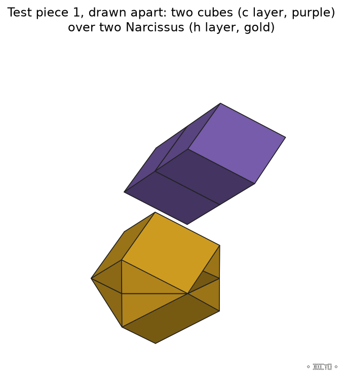
| Item | What and how much |
|---|---|
| Yarn | DK cotton (light worsted, 8-ply), smooth and not fluffy. One cell takes about 75 m (about 35 g), and test piece 1 (4 cells) about 300 m: buy three 50 g balls. Two colours make the layers easy to see, for example gold for Narcissus and purple for cubes, as in the figures. For a closer figure, weigh your 10 × 10 cm gauge swatch: one cell takes about 5.6 times that weight, plus 10 % for seams and tails. |
| Hook | 4.0 mm (US G-6, UK 8), or whichever size gives the gauge in §A4. |
| Stitch markers | at least 4, locking or split-ring. |
| Yarn needle | a blunt tapestry needle with an eye large enough for DK yarn. |
| Core sheet | thin card, 300–400 g/m² (cereal-box card works), or flat PET sheet 0.3–0.5 mm thick (clear folders or flat packaging). You need 3 A4 sheets for a Narcissus core and 3 strips of 91 × 182 mm for a cube core. |
| Core tools | printer (print at 100 %, see §A6), scissors or a craft knife, a metal ruler, an empty ballpoint pen for scoring fold lines, and clear tape or masking tape. |
| Also | a tape measure, and a few pins or clips to hold edges while sewing. |
| US | UK | Meaning |
|---|---|---|
| ch | ch | chain |
| st, sts | st, sts | stitch, stitches |
| sc | dc (double crochet) | single crochet: insert hook, yarn over, pull up a loop (2 loops on hook), yarn over, pull through both loops |
| 2 sc in st | 2 dc in st | increase: work 2 sc into the same stitch (one stitch more) |
| sc2tog | dc2tog | decrease by one: (insert hook in next st, yarn over, pull up a loop) twice, yarn over, pull through all 3 loops |
| sc3tog | dc3tog | decrease by two: (insert hook in next st, yarn over, pull up a loop) three times, yarn over, pull through all 4 loops |
| turn | turn | turn the work to start the next row |
In every row from row 2 on, start with ch 1, turn. This ch 1 is not a stitch: do not work into it, and do not count it. The number in brackets at the end of a row, for example (16), is the number of sc in that row. Count it at the end of every row.
The whole pattern depends on gauge. The target is 18 sc and 20 rows to 10 cm in single crochet. Stitches and rows both matter, because every face uses both.
Keep the swatch. Its weight gives the yarn estimate in §A2.
All faces are worked back and forth in rows of sc. At the end of each face, fasten off and leave a 40 cm tail for sewing. Single crochet looks the same on both sides, so either side may face out, except on the triangles (§A5.3).
| Face | per Narcissus | per cube | for test piece 1 |
|---|---|---|---|
| Square | 3 | 6 | 18 |
| Regular hexagon | 1 | – | 2 |
| Right triangle | 6 | – | 12 |
| Ch 18 | foundation chain | |
| Row 1 | sc in 2nd ch from hook and in each ch across | (17) |
| Rows 2–19 | ch 1, turn, sc in each st across | (17) |
| End | fasten off, leaving a 40 cm tail |
Size at gauge: 9.44 cm across (17 sts), 9.50 cm high (19 rows). The two edges made of stitches (the foundation and row 19) and the two edges made of row ends are sewn alike.
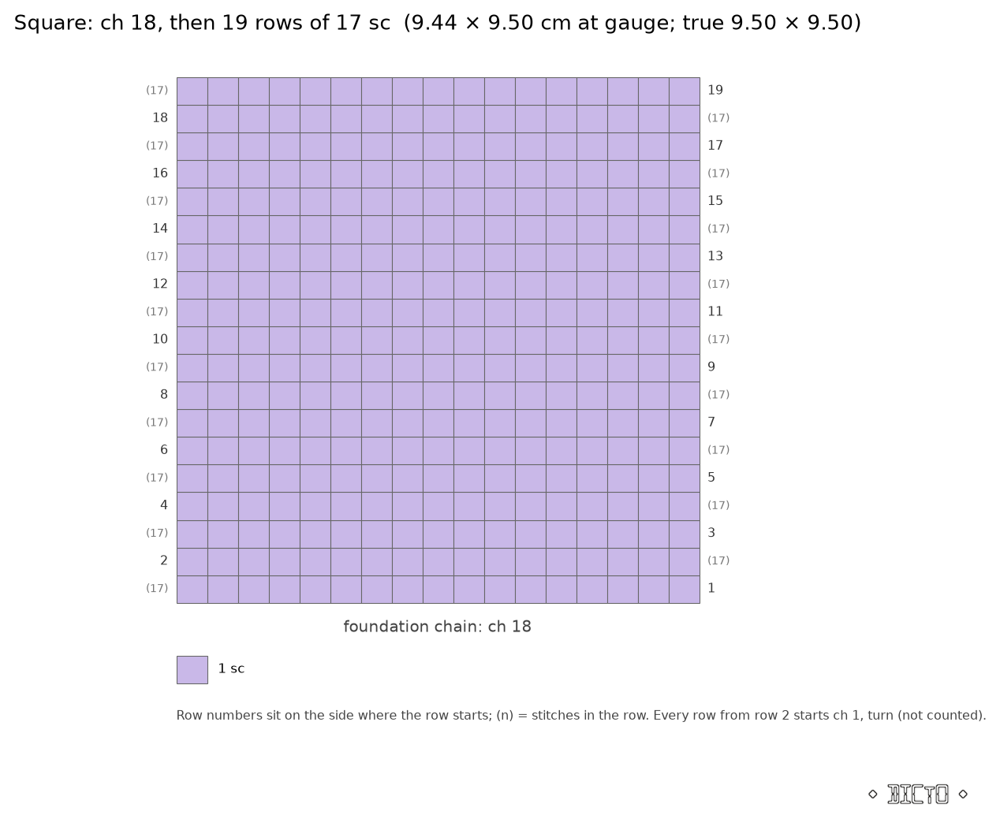
Increases at both ends of every even row up to row 14, then decreases at both ends of every odd row from row 15.
| Ch 15 | foundation chain | |
| Row 1 | sc in 2nd ch from hook and in each ch across | (14) |
| Row 2 | ch 1, turn, 2 sc in first st, sc in each st to the last st, 2 sc in last st | (16) |
| Row 3 | ch 1, turn, sc in each st across | (16) |
| Rows 4–13 | repeat rows 2 and 3 five more times; counts 18, 18, 20, 20, 22, 22, 24, 24, 26, 26 | (26) |
| Row 14 | as row 2: this is the widest row | (28) |
| Row 15 | ch 1, turn, sc2tog, sc in each st to the last 2 sts, sc2tog | (26) |
| Row 16 | ch 1, turn, sc in each st across | (26) |
| Rows 17–26 | repeat rows 15 and 16 five more times; counts 24, 24, 22, 22, 20, 20, 18, 18, 16, 16 | (16) |
| Row 27 | as row 15 | (14) |
| End | fasten off, leaving a 40 cm tail |
The foundation edge and row 27 are two opposite sides of the hexagon; the row ends make the other four. To keep the increases and decreases in the right place, put a marker in the first and last stitch of row 1 and move them up to the edge stitches every few rows.
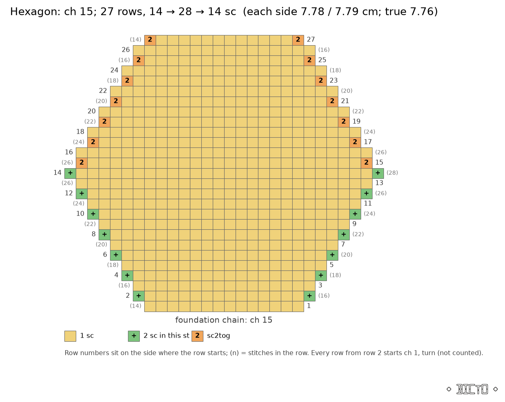
The foundation is the long leg. The beginning of row 1 becomes the straight short leg, which gets no shaping. All decreases are made at the other end, which becomes the slanted long side (the hypotenuse). Because the rows turn, the decrease is at the start of even rows and at the end of odd rows.
| Ch 15 | foundation chain | |
| Row 1 | sc in 2nd ch from hook and in each ch across. Put a marker in the first sc of this row: that end stays straight. | (14) |
| Row 2 | ch 1, turn, sc2tog, sc in each st to end | (13) |
| Row 3 | ch 1, turn, sc in each st to the last 2 sts, sc2tog | (12) |
| Row 4 | ch 1, turn, sc2tog, sc in each st to end | (11) |
| Row 5 | ch 1, turn, sc in each st to the last 3 sts, sc3tog | (9) |
| Row 6 | ch 1, turn, sc2tog, sc in each st to end | (8) |
| Row 7 | ch 1, turn, sc in each st to the last 2 sts, sc2tog | (7) |
| Row 8 | ch 1, turn, sc3tog, sc in each st to end | (5) |
| Row 9 | ch 1, turn, sc in each st to the last 2 sts, sc2tog | (4) |
| Row 10 | ch 1, turn, sc2tog, sc in each st to end | (3) |
| Row 11 | ch 1, turn, sc3tog | (1) |
| End | fasten off, leaving a 40 cm tail |
Chart side. Make all six triangles the same way. Then lay each one so that it looks like Figure A4: long leg at the bottom, right angle at the bottom right. The side you now see is the chart side. In a Narcissus, three triangles are sewn with the chart side out and three with the chart side in (marked "out" and "in" in Figure A5). This gives the two mirror-image triangles the solid needs from one pattern.
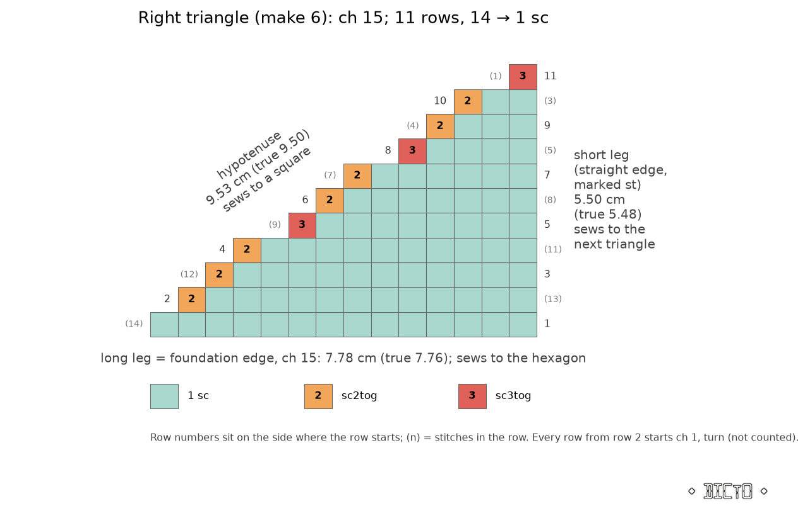
Each length below is computed from the counts at the gauge of 18 sts and 20 rows to 10 cm, and compared with the true length of that side of the solid.
| Side | True (cm) | From the stitches (cm) | Difference |
|---|---|---|---|
| square, stitch edge (17 sts) | 9.50 | 9.44 | −0.58 % |
| square, row edge (19 rows) | 9.50 | 9.50 | 0.00 % |
| hexagon, foundation and last row (14 sts) | 7.76 | 7.78 | +0.27 % |
| hexagon, slanted sides (7 sts across, 13.5 rows up) | 7.76 | 7.79 | +0.43 % |
| triangle, long leg (14 sts) | 7.76 | 7.78 | +0.27 % |
| triangle, short leg (11 rows) | 5.48 | 5.50 | +0.28 % |
| triangle, hypotenuse | 9.50 | 9.53 | +0.27 % |
Every side is within 0.6 % of its true length. The hexagon's corners come out at 119.95° (true 120°), and the triangle's sharp corner at 35.27° (true 35.26°). The slanted edges are stepped one stitch at a time; the seams hide the steps.
Each cell is sewn round a stiff hollow core folded from card or PET sheet. The core is the same solid as the cell at 95.8 % of the full size, so the crochet fabric (about 4 mm thick) fits round it. The cube core has sides of 91.0 mm and sits 2.0 mm inside every face. The Narcissus core has squares of 91.0 mm, a hexagon of side 74.3 mm, and triangles with legs 74.3 and 52.5 mm and a hypotenuse of 91.0 mm; it sits 1.7 to 2.8 mm inside the faces. Test piece 1 shows whether this allowance suits your yarn: the faces should lie flat and taut, without bulging or sagging.
Cut three strips from the template, score and fold each across the middle (90°), then fit the three strips together as in the small diagram on that page. Each strip wraps round the others, and the edges are taped with the same letters as the crochet cube.
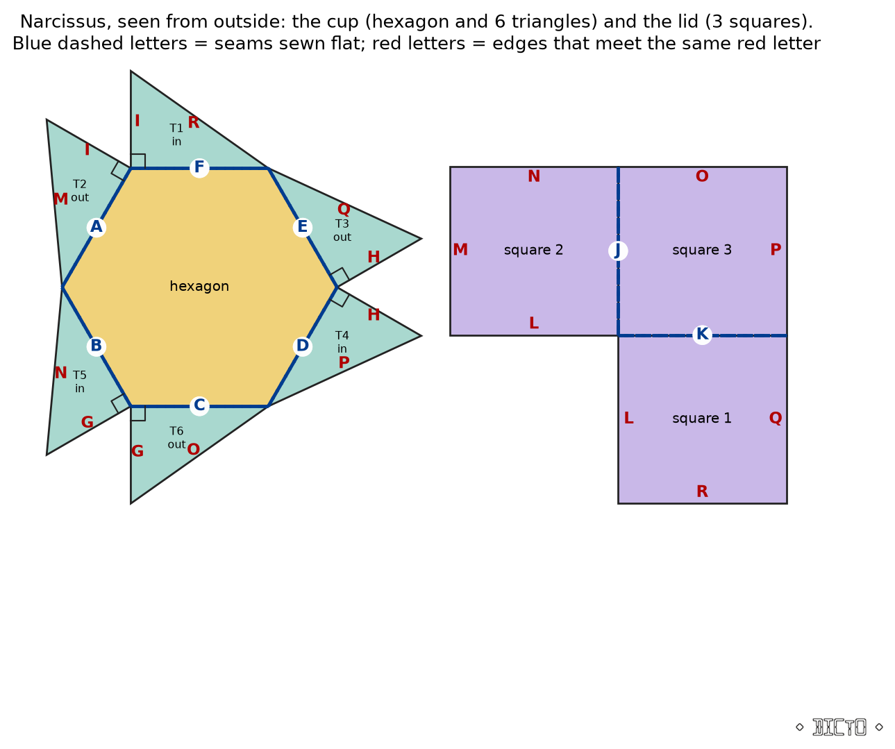
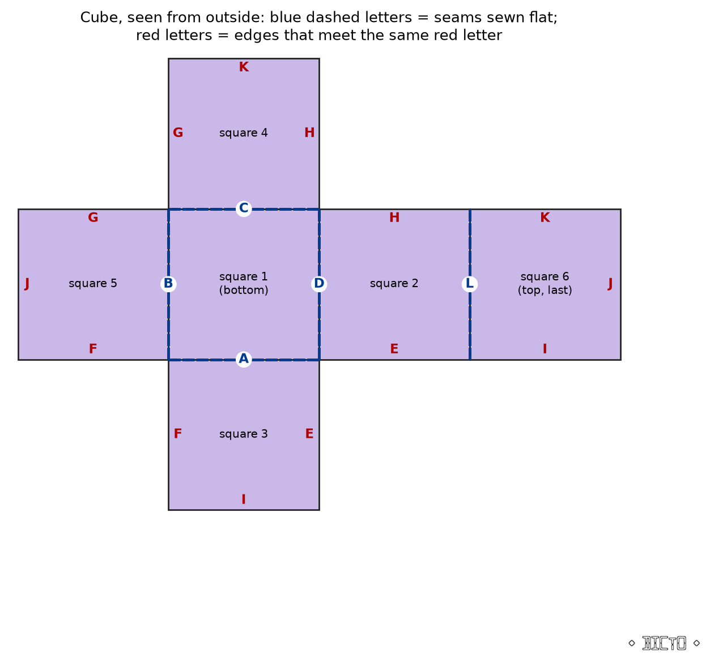
Put two Narcissus hexagon to hexagon. Turn one until, at every edge of the hexagon, the two triangles that meet there have their right angles at the same corner. Each such pair then lies in one plane and forms one flat isosceles triangle. The result is the twisted cube: 6 squares and 6 isosceles triangles, 12 faces in all. A few stitches at the six corners of the hexagon hold the pair together; the cells can also be left loose.
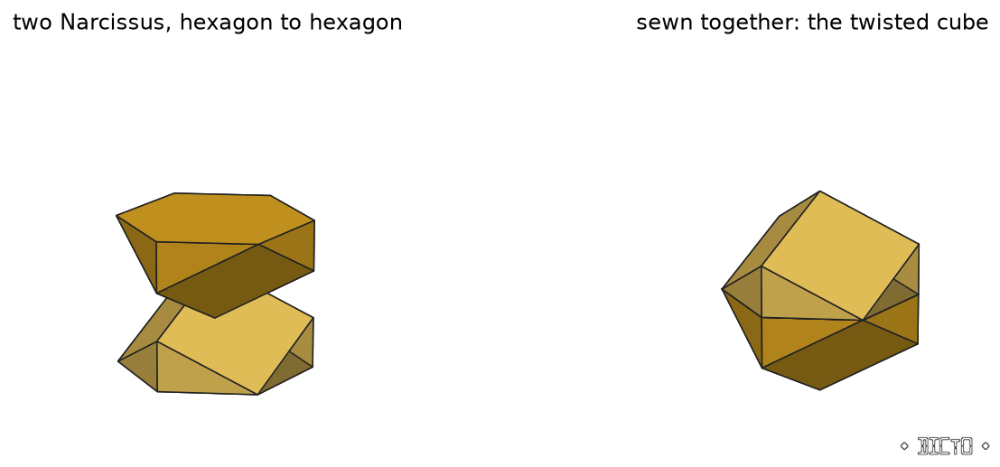
Then check and note down:
The next build after this is test piece 2, a 4H block of 16 Narcissus and 16 cubes.
Faces T1, T2, T3 and square 1. Cut 1. Print at 100 %; the bar must measure 100 mm.
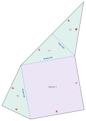
The hexagon with T4 and T5. Cut 1. Print at 100 %; the bar must measure 100 mm.
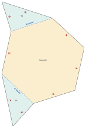
Squares 2 and 3 with T6. Cut 1. Print at 100 %; the bar must measure 100 mm.
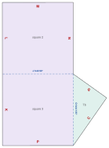
Two squares of 91.0 mm with a 90° fold. Cut 3. Print at 100 %; the bar must measure 100 mm.
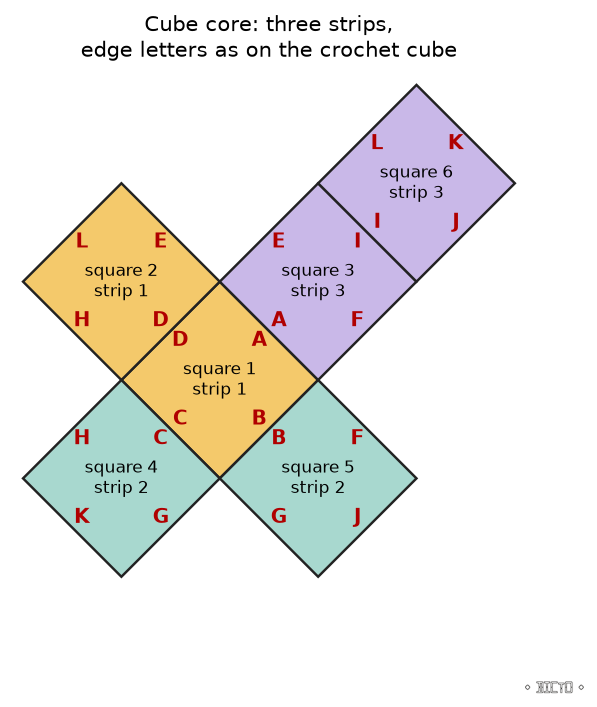